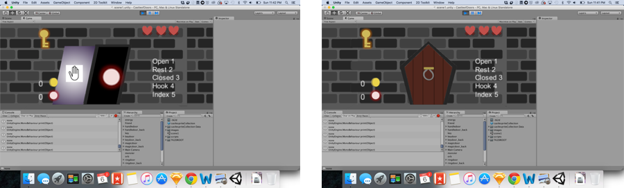

Training game for patients using prosthetic arms
Scope: Project for Rock, Paper, Scissors Challenge at the USC Creative Media and Behavioral Health Center
Target Audience: Patients Training to Use Prosthetic Arms
Team: Vangelis Lympouridis, PhD and Caroline Win
My Role: Game Designer and Developer, Research Assistant
Timeline: Jan - Aug 2013
Main Goal: design and develop a prototype of a game for making the experience of training oneself to use a prosthetic arm effective and enjoyable.
Requirement: the game design must be driven by the need to invoke and repeat 5 hand gestures for training purposes
I worked with a larger team of 9 people initially at the Creative Media & Behavioral Health Center to discuss ideas. We then separated into pairs to work on individual game ideas. My partner was Vangelis Lympouridis, PhD, a game designer and audio engineer.
This design challenge involved partnerships with Infinite Biomedical Technologies in Baltimore and the Medstar National Rehabilitation Hospital in Washington, D.C. and sponsorship by the National Institutes of Health. Access to the MyoTrain prosthetic arm was provided for testing with the game prototypes.
In the larger group of 9, we first came up with as many ideas as we could think of to represent the 5 hand gestures and different hand positions.
Typically in the training process, a patient will repeatedly practice different hand gestures and rotations with their prosthetic arm for half an hour, which can be a very monotonous and boring task. We sought to create a game where the patient will be able to feel some reward and excitement from the experience, so that he or she may even look forward to the daily training rather than dreading it or even skipping it.
My partner and I came up with the simple idea of being a wizard seeking a magical orb inside a castle. As each new door in the castle is opened, the wizard must fight monsters and collect treasures and orbs and travel up the floors of the castle to obtain the sacred orb.
After working out our idea, I developed a prototype for the game in Unity. I then created a list of sounds needed for the game, such as a door opening and closing, a burst of energy from a magic staff, and glowing sounds for orbs. Vangelis created the sound effects and background music. We presented our final prototype to the larger group.
